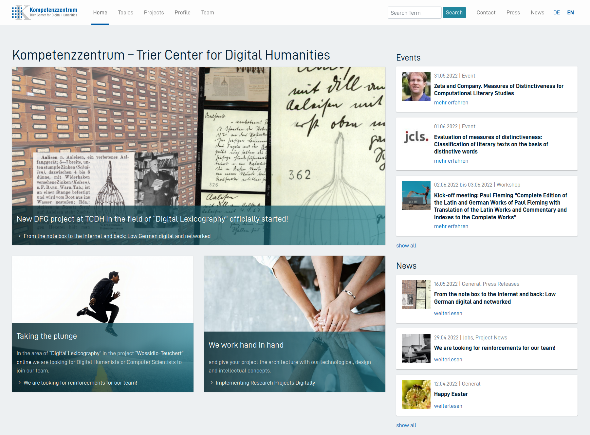

# Zeta and Company: where we stand <img data-src="img/basics/zeta-logo.png" height="120"></img> <br/><br/> **Christof Schöch with Julia Dudar and Keli Du** <br/> *** SPP CLS General Meeting, May 31, 2022 <br/>https://zeta-project.eu/en/ *** <img data-src="img/basics/dfg-logo.jpg" height="35"></img> <img data-src="img/basics/tcdh-slim.png" height="40"></img> <img data-src="img/basics/uni-trier.png" height="40"></img> </img> :: - Very nice to be here, in person even! - Welcome to this first presentation - I present today, but of course all of this is teamwork - Particularly greatful to Julia Dudar and Keli Du -- ### Overview 1. [Our project in context](#/2) 1. [Zeta and Company: So far](#/3) 1. [Zeta and Company: Next steps](#/4) 1. [Zeta and Company: Beyond Words](#/5) 1. [Conclusion](#/6) :: -- ## (1) Our project in context --- ### Trier Center for Digital Humanities  <br/> * https://tcdh.uni-trier.de/en/ --- ### TCDH: three research areas <br/> * Digital Editions and Lexicography (Dr. Claudia Bamberg) * Software Systems and Research Infrastructure (Dr. Thomas Burch) * <span style="background-color:DeepSkyBlue">Digital Literary and Cultural Studies (Dr. Joelle Weis)</span> :: - Distant Reading / CLS INFRA: Community, corpus building, CLS methods - Mining and Modeling Text: Linked Open Data for literary history - Text+ / NFDI: infrastructure and community, Trier: "derived text formats" - So this is the context of our work in "Zeta and Company" -- ## (2) Zeta and company: so far --- ### Key objectives * Algorithmically support a key strategy in the Humanities: comparison (e.g. AVL, SFB 1288) <!-- .element: class="fragment fade-in-then-semi-out" data-fragment-index="1" --> * Model, implement, evaluate and use a range of measures of distinctiveness or keyness <!-- .element: class="fragment fade-in-then-semi-out" data-fragment-index="2" --> * Use one shared implementation, to enable meaningful comparison <!-- .element: class="fragment fade-in-then-semi-out" data-fragment-index="3" --> * Use reference datasets relevant to CLS: subgenres of the novel <!-- .element: class="fragment fade-in-then-semi-out" data-fragment-index="4" --> * Outcome: Descriptions and recommendations for use of such measures <!-- .element: class="fragment fade-in-then-semi-out" data-fragment-index="5" --> :: - AVL: Comparative Literature - SFB 1288: "Praktiken des Vergleichens" in Bochum --- ### Corpus building <img data-src="img/roman20-line.png" height="180"> <br/> <br/> * Contemporary French novels, ca. 1950-2000 <!-- .element: class="fragment fade-in-then-semi-out" data-fragment-index="1" --> * 1300+ novels digitized (scan, OCR, XML) so far <!-- .element: class="fragment fade-in-then-semi-out" data-fragment-index="2" --> * current balanced reference set: 2x4x40=320 novels <!-- .element: class="fragment fade-in-then-semi-out" data-fragment-index="3" --> * rapid growth through targeted closing of gaps <!-- .element: class="fragment fade-in-then-semi-out" data-fragment-index="4" --> --- ### Derived formats <br/> <br/> * Token-level linguistic annotation <!-- .element: class="fragment fade-in-then-semi-out" data-fragment-index="1" --> * Segment-wise sequence randomization <!-- .element: class="fragment fade-in-then-semi-out" data-fragment-index="2" --> * Useable for Stylometry, Topic Modeling, Distinctiveness <!-- .element: class="fragment fade-in-then-semi-out" data-fragment-index="3" --> --- ### Modeling measures --- ### Implementing measures --- ### Testing Zeta and Eta <br/> <br/> * Zeta: Measure proposed by John Burrows <!-- .element: class="fragment fade-in-then-semi-out" data-fragment-index="1" --> * Eta: Measure based on Stefan Gries' dispersion measure <!-- .element: class="fragment fade-in-then-semi-out" data-fragment-index="2" --> * Both perform well but differ in the specificity of the words they identify <!-- .element: class="fragment fade-in-then-semi-out" data-fragment-index="3" --> --- ### Theorizing about Evaluation <img data-src="img/jlt2021.png" height="320"> <br/> <br/> * It's a mistake to use any given measure to define distinctiveness <!-- .element: class="fragment fade-in-then-semi-out" data-fragment-index="1" --> * Need for qualitative understanding before quantitative evaluation <!-- .element: class="fragment fade-in-then-semi-out" data-fragment-index="2" --> --- ### Evaluation via classification task (CCLS2022) <a href="img/jcls-fig4.png"></a> <br/> <br/> * Key result: dispersion and distribution-based measures are superior to frequency-based measures <!-- .element: class="fragment fade-in-then-semi-out" data-fragment-index="1" --> * For details, come listen to our talk at CCLS 2022 <!-- .element: class="fragment fade-in-then-semi-out" data-fragment-index="2" --> -- ## (3) Zeta and company: next steps --- ### Synthetic texts --- ### Uniformity of p-values (Lijffijt) --- ### Application study -- ## (4) Zeta and company: Beyond Words --- ### More corpora --- ### Multi-word units --- ### Semantic distinctiveness -- ## Conclusion --- ### So, what is ELTEC? * A multilingual resource, of course <!-- .element: class="fragment fade-in-then-semi-out" data-fragment-index="1" --> --- ### Thank you! <img height="500" data-src="img/basics/danke.png"> --- ### References <small> * **References** * **Links** * Slides: https://Zeta-and-Company.github.io/gm2022/ * Licence: [Creative Commons Attribution 4.0 International (CC BY)](https://creativecommons.org/licenses/by/4.0/) </small>